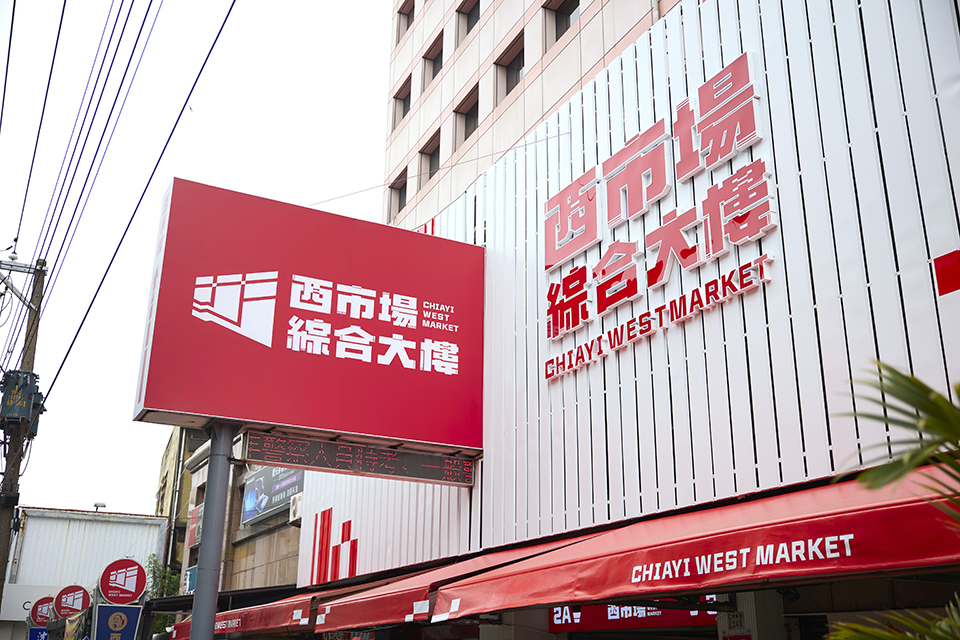
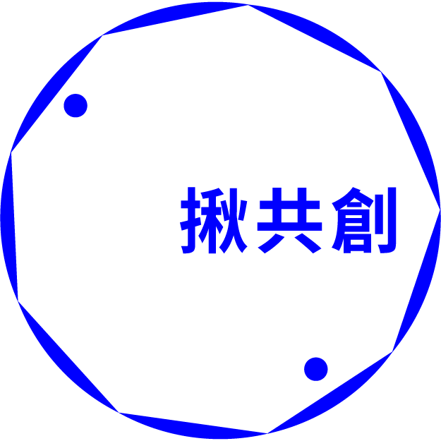
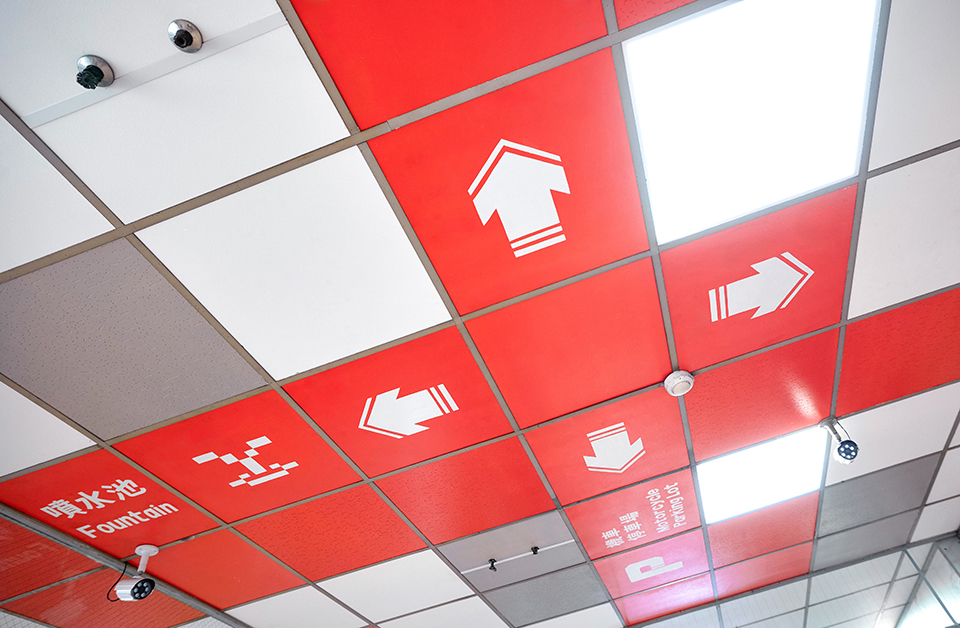
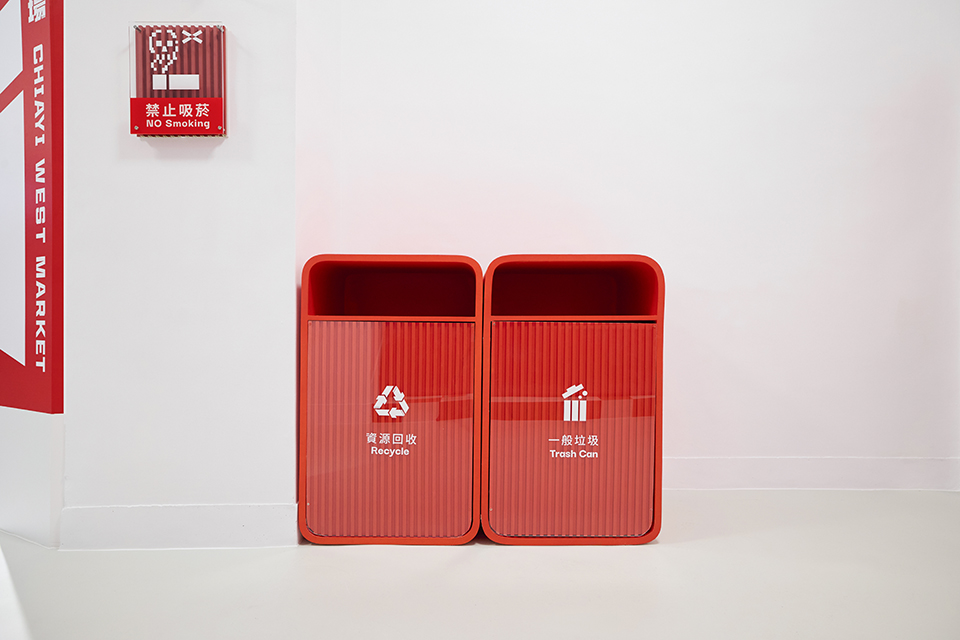
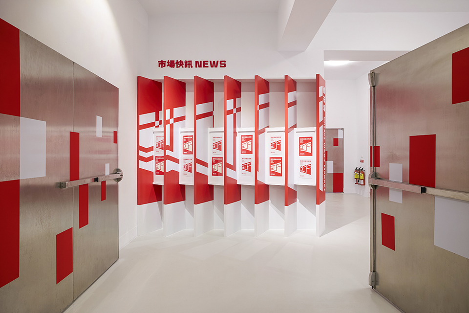
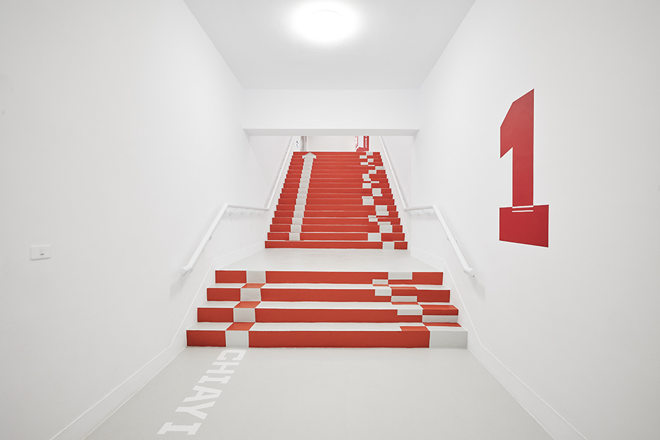
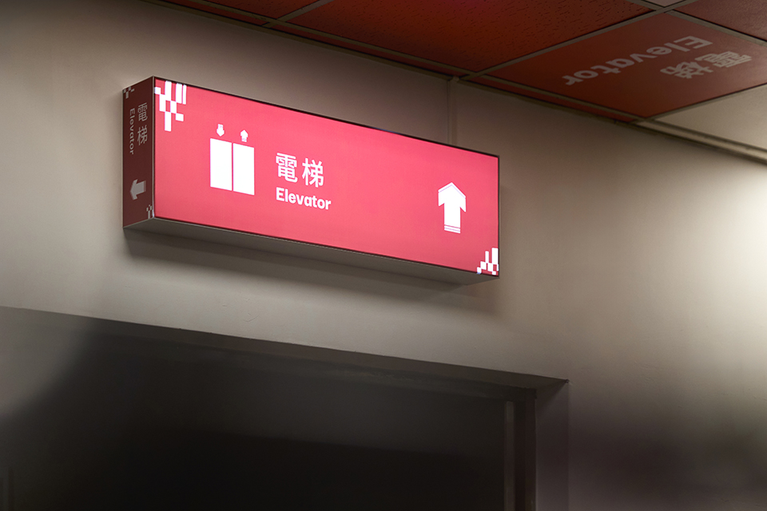
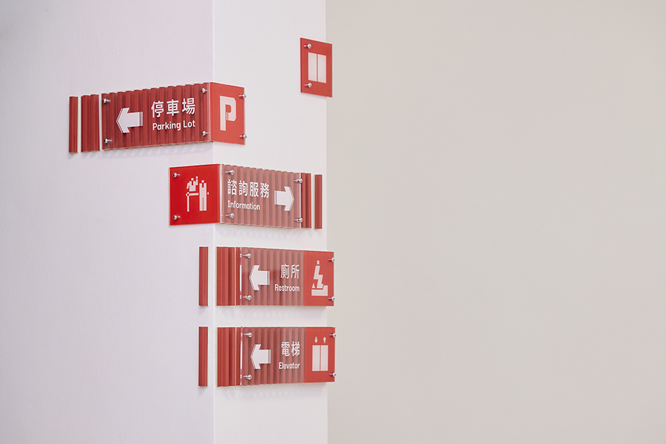
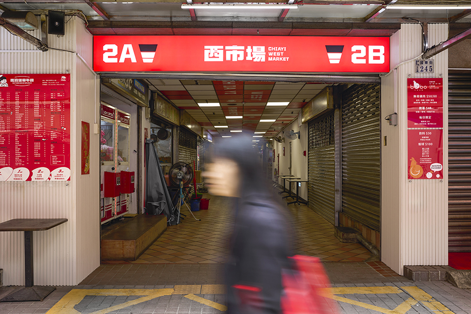

揪共創 Co-Creating
西市場
嘉義市公有市場創新改造計畫


嘉義市政府致力推動傳統公有市場的創新轉型，透過「數位翻轉青年創業基地」及「市場特色型塑補助」等措施，鼓勵市場經營者創業並進行數位行銷優化。本計畫旨在協助公有市場攤販藉由創新經營模式吸引年輕族群，進一步提升經濟活力。市府並特別委託專業團隊，提供攤家訪視診斷，透過品牌再造、服務升級、行銷亮點創造等方法，強化市場的產業傳承及在地特色，達到多方共贏的目標。
位於嘉義市國華街的百年西市場是本次改造的核心。 2022 年市府啟動「二通圈」概念，計畫將西市場打造成數位翻轉的青年創業基地，並融合商辦功能。 2023 年，透過范特喜微創文化與白水設計的規劃設計，完成西市場第一階段的硬體升級。設計以減法思維優化市場動線，透過重新梳理攤位及公共空間，使整體空間更為明亮寬敞，為顧客提供更好的消費體驗。






西市場綜合大樓二樓設立了「XI Project（西市場計畫）」數位青創基地，除了支援本地攤商進行數位化轉型，更鼓勵嘉義市民利用該空間進行網路直播，創造傳統市場與數位行銷的結合新模式。此外，透過設計創意的導入，如趣味化的指示標示系統，市場空間變得更具親和力，為消費者提供愉快的空間導引。市府期望未來更多創業青年和特色攤家進駐，進一步強化市場品牌形象，為地方經濟注入活力。
透過持續的媒體宣傳和當地社區支持，市府計畫將西市場打造成嘉義市的新興亮點，提升區域經濟與夜間經濟，並讓這座百年市場在保留傳統文化的同時，迎向創新轉型的未來。

| 主辦單位 ｜ | ｜ | 嘉義市政府建設處 |
|---|---|---|
| 承辦單位 ｜ | ｜ | 范特喜微創文化、白水設計有限公司 |
| 暸解更多 ｜ | ｜ | FB |